PART 1. 교통 기초 개념▲
개념 01교통의 구성요소 — 두 가지 구별
| 구분 | 내용 |
|---|---|
| 교통의 3대 구성요소 | 사람 · 교통수단 · 통로 |
| 교통기관의 3대요소 | 통로 · 운반구 · 동력 |
⚠️ 함정 주의: '교통의 구성요소'에 운반구·동력 넣으면 오답 / '교통기관 요소'에 사람 넣으면 오답
개념 02교통사고 원인 분류
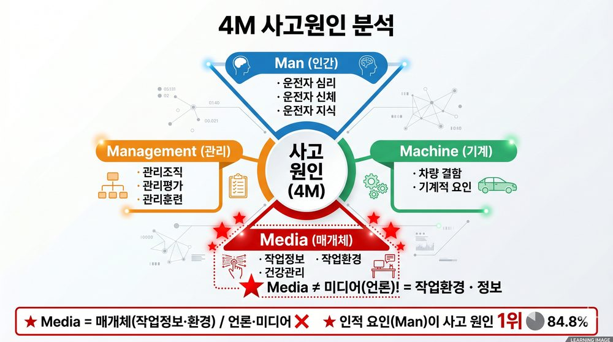
4M 사고원인 구조도
| 요인 | 내용 | 비율 |
|---|---|---|
| 인적 요인 | 운전자 심리·신체·지식 | 84.8% 압도적 1위 |
| 환경 요인 | 도로·기상 등 외부 환경 | |
| 차량 요인 | 차량 결함·정비 불량 |
| 4M 요소 | 영어 | 내용 |
|---|---|---|
| 인간 | Man | 운전자 심리·신체·지식 |
| 기계 | Machine | 차량 결함·기계적 요인 |
| 매개체 | Media | 작업정보·작업환경·건강관리 |
| 관리 | Management | 관리조직·평가·훈련 |
⚠️ 함정 주의: Media = 매체·미디어가 아닌 작업정보·환경
★ 직접원인: 음주·과속·장비불량 / 간접원인(잠재원인): 교육적 원인
개념 03안전관리 3대 접근방법 (3E)
| 접근 | 3E | 내용 |
|---|---|---|
| 기술적 접근 | Engineering | 하드웨어·기술개발 |
| 교육적 접근 | Education | 교육·훈련 |
| 제도적 접근 | Enforcement | 법령 제정·안전기준·단속 |
★ 관리적 접근 = 소프트웨어·통계학·품질관리기법 (제도적 접근과 구별)
PART 2. 핵심 안전 이론▲
개념 04하인리히 법칙 — 1 : 29 : 300
중대사고 1 : 경미사고 29 : 무상해사고 300
★ 사소한 사고 300건이 쌓이면 대형사고 1건 발생 — 작은 사고 무시 금지
⚠️ 함정 주의: 숫자 순서 바꾸기 출제 — 1:300:29 형태
개념 05등치성 원리
★ 사고 원인 요인들의 비중이 동일 — 어느 하나 제거해도 사고 방지 가능
⚠️ 함정 주의: '어느 하나가 더 중요하다' → 오답 / 빈출 TOP 1
개념 06욕조곡선 (Bathtub Curve)
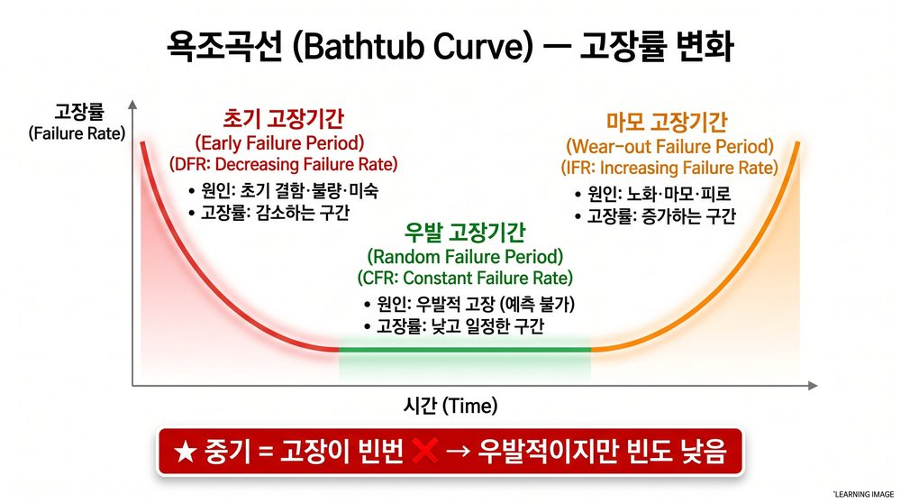
욕조곡선 — 고장률 시간 변화
| 구간 | 고장 유형 | 원인 |
|---|---|---|
| 초기 (감소형) | 초기 결함 고장 | 설계·제조 결함·미숙 |
| 중기 (안정형) | 우발적 고장 | 예측 불가 |
| 말기 (증가형) | 마모 고장 | 노화·마모 |
⚠️ 함정 주의: '중기 = 고장 빈번' → 오답 (중기는 우발적, 빈도 낮음)
개념 07페일 세이프 (Fail-Safe)
★ 장치에 고장 발생해도 안전 상태 유지·전이하는 설계 — 철도 신호 고장 시 자동 정지
개념 08PDCA 사이클
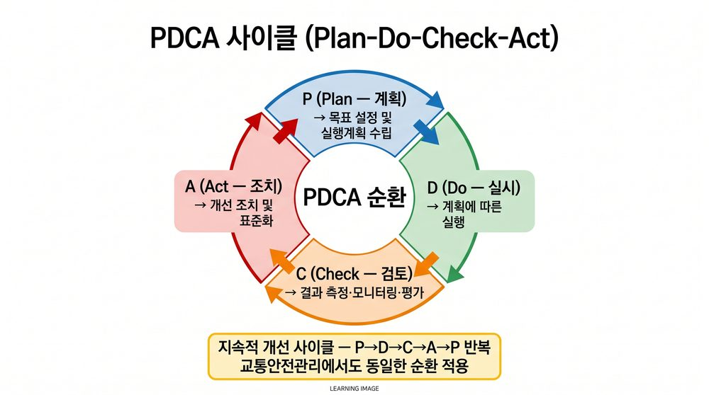
PDCA 사이클
| 단계 | 영어 | 의미 |
|---|---|---|
| P | Plan | 계획 |
| D | Do | 실시 |
| C | Check | 통제 |
| A | Act | 조정 |
⚠️ 함정 주의: C = '확인' 아님 → 통제 / A = '개선' 아님 → 조정
PART 3. 단계별 절차 — 순서가 핵심▲
개념 09위험요소 제거 6단계
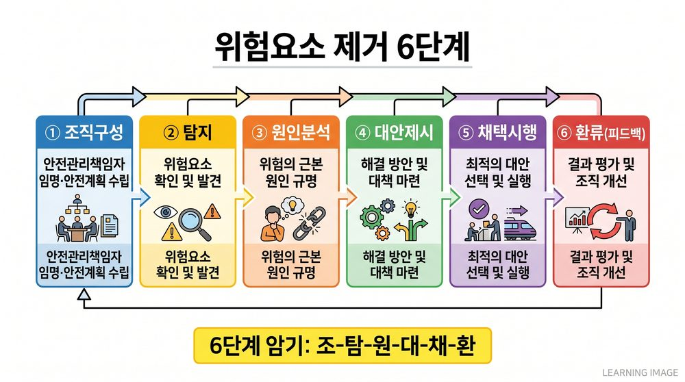
위험요소 제거 6단계
조직구성 → 탐지 → 원인분석 → 대안제시 → 채택시행 → 환류(피드백)
★ '안전관리책임자 임명·안전계획 수립' = 조직구성 단계 (자주 출제)
개념 10교통안전관리 6단계
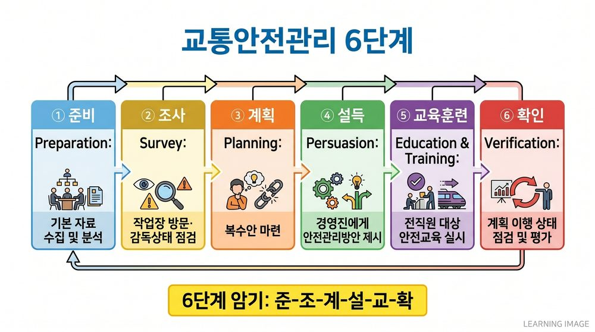
교통안전관리 6단계
준비 → 조사 → 계획 → 설득 → 교육훈련 → 확인
| 단계 | 핵심 |
|---|---|
| 조사 | 작업장 방문·안전지시·감독상태 점검 |
| 설득 | 경영진에게 효과적 안전관리방안 제시 |
| 계획 | 복수안 마련 (단수 ❌) |
개념 11TBM (현장안전회의) 5단계
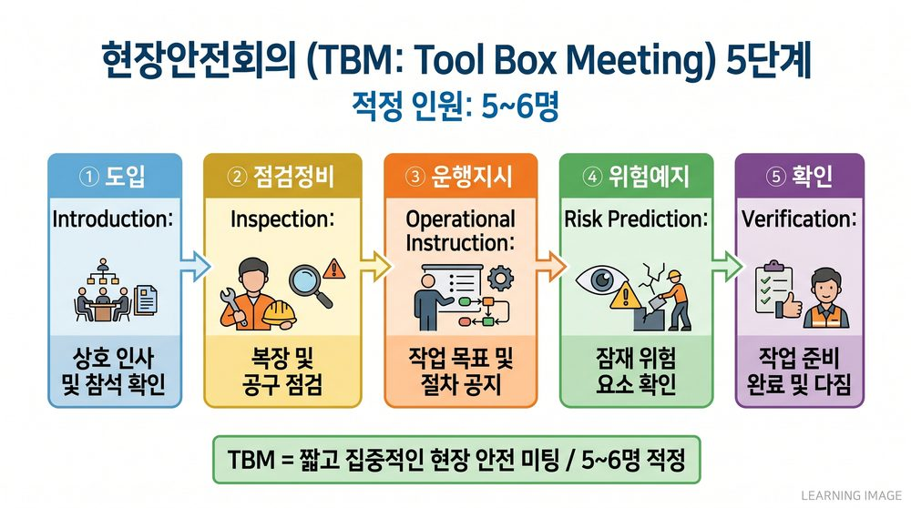
TBM 현장안전회의 5단계
도입 → 점검정비 → 운행지시 → 위험예지 → 확인
| 항목 | 내용 |
|---|---|
| 적정 인원 | 5~6명 |
| 소집단 일반 | 10명 내외 (TBM과 구별!) |
| 원칙 | 일방적 지시 ❌ → 스스로 생각하고 납득 |
⚠️ 함정 주의: 소집단 일반=10명 ↔ TBM=5~6명 — 혼동 주의
개념 12ZD (Zero Defect) 운동 3단계
조성 → 출발 → 실행 및 운영
⚠️ 함정 주의: '종합평가단계'는 없다 — 가장 자주 나오는 함정
개념 13안전진단 5단계
예비조사 → 안전진단 → 종합정비 → 대책강구 → 개선목표
개념 14교통사고 방지 5단계
안전관리 → 사실발견 → 분석 → 시정방법설정 → 개선
개념 15IPDE — 정보처리 4단계
확인(Identify) → 예측(Predict) → 결정(Decision) → 실행(Execute)
⚠️ 함정 주의: 결정 단계: 위험 예측 시 → 피하는 행동 결정 (그대로 진행 ❌)
개념 16PIEV — 운전자 반응과정
지각(Perception) → 식별(Identification) → 행동판단(Emotion) → 반응(Volition)
★ 운전자 생리과정: 인지 → 판단 → 조작
PART 4. 경영·조직 이론▲
개념 17경영학 발전 순서 — 반드시 암기
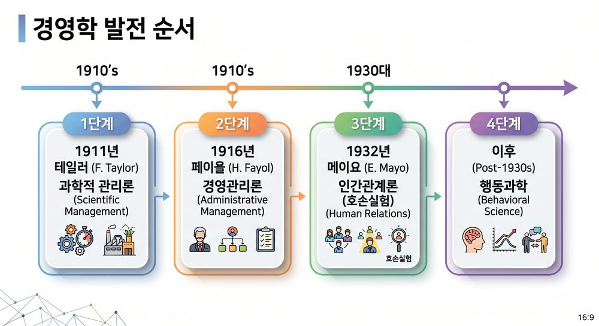
경영학 발전 순서 타임라인
과학적 관리론(테일러,1911) → 경영관리론(페이욜,1916) → 인간관계론(메이요,1932,호손실험) → 행동과학
⚠️ 함정 주의: 순서 뒤섞어 출제 — 다(과학)→나(경영관리)→가(인간관계)→라(행동과학) 형태
개념 18테일러 과학적 관리론
| 항목 | 내용 |
|---|---|
| 핵심 방법 | 시간연구·동작연구로 표준과업 결정 |
| 임금 방식 | 차별성과급제 |
| 접근 방식 | 기술적 접근 (사회적 접근 ❌) |
⚠️ 함정 주의: '테일러 = 저가격·고임금' → ❌ 이것은 포드 시스템
⚠️ 함정 주의: '경영관리론 모태 = 테일러' → ❌ 모태는 페이욜
개념 19페이욜 경영관리론
| 항목 | 내용 |
|---|---|
| 관리 5요소 | 계획·조직·명령·조정·통제 |
| 경영활동 6가지 | 기술·상업·재무·보호·회계·관리 |
| 핵심 원칙 | 분업의 원칙 |
개념 20인간관계론 (메이요·뢰슬리스버거)
★ 호손실험 → 비공식조직이 동기부여에 결정적 영향
⚠️ 함정 주의: 공식조직 강조 = 인간관계론과 무관 (오답)
개념 21맥그리거 X·Y 이론
| 이론 | 인간관 | 관리 방식 |
|---|---|---|
| X이론 | 인간은 게으르고 책임 회피 | 채찍·통제·명령 |
| Y이론 | 인간은 자율적·창의적 | 자율·자기통제 |
★ Y이론 = 자율성·합목적성 전제
개념 22Z이론 (오우치)
| Z이론 5가지 특징 | 있음/없음 |
|---|---|
| 장기고용 | ✅ |
| 집단의사결정 | ✅ |
| 개인책임 | ✅ |
| 느린 평가와 승진 | ✅ (느린 것이 맞음) |
| 전인격적 관심 | ✅ |
⚠️ 함정 주의: '빠른 평가와 승진' = Z이론 → ❌ 매우 자주 출제
개념 23바나드·사이몬 행동과학
| 학자 | 핵심 개념 |
|---|---|
| 바나드 | 조직=유효성+능률 / 성립 3요소: 공동목적·협동의욕·의사소통 |
| 사이몬 | 관리인 가설(제한된 합리성) / 자기통제: 조직충성심·일체감·유효성기준 |
개념 24조직 유형
| 유형 | 특징 |
|---|---|
| 라인스텝형 | 대규모 조직에 적합 |
| 사업부제 | 환경변화 신축적·업무조정 용이·책임소재 명확·독립성 |
개념 25관리층 역할 구분
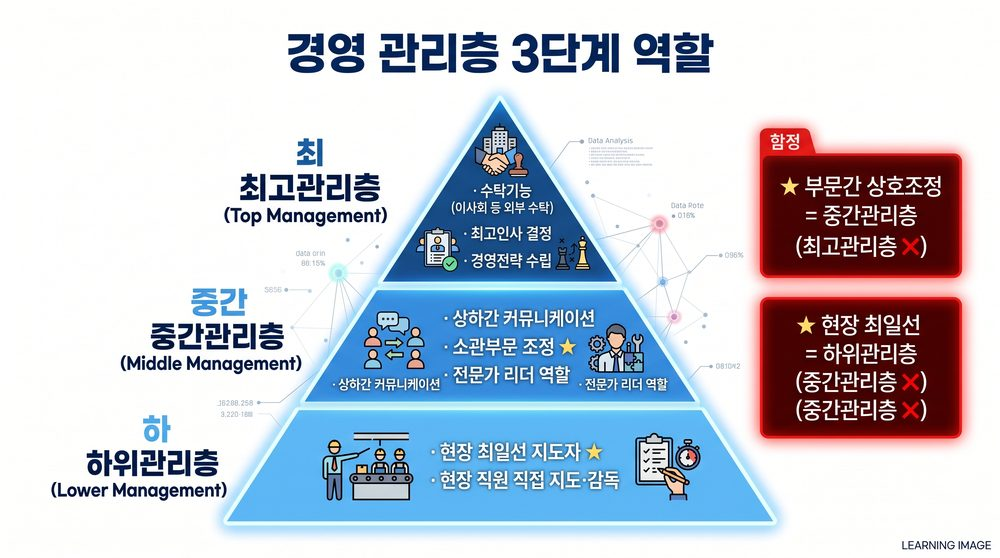
관리층 역할 3단계
| 계층 | 역할 |
|---|---|
| 최고관리층 | 수탁기능·최고인사·경영전략 |
| 중간관리층 | 상하 커뮤니케이션·소관부문 종합조정·전문가 리더 |
| 하위관리층 | 현장 최일선 지도자 |
⚠️ 함정 주의: 부문간 상호조정 = 최고관리층 → ❌ 중간관리층
⚠️ 함정 주의: 현장 최일선 지도자 = 중간관리층 → ❌ 하위관리층
PART 5. 동기이론▲
개념 26동기이론 분류 — 내용 vs 과정
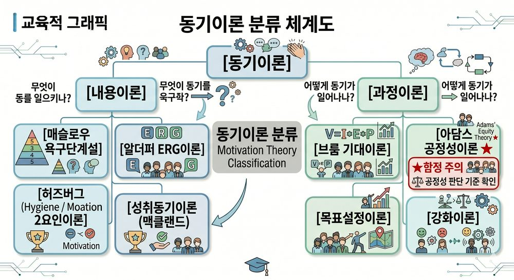
동기이론 분류 체계도
| 분류 | 이론 | 핵심 질문 |
|---|---|---|
| 내용이론 | 욕구단계설·ERG·2요인·성취동기 | 무엇이 동기를 일으키나? |
| 과정이론 | 기대이론·공정성이론·목표설정·강화이론 | 어떻게 동기가 일어나나? |
⚠️ 함정 주의: 공정성이론 = 과정이론 ← 내용이론으로 착각하는 함정 (빈출)
개념 27매슬로우 욕구 5단계
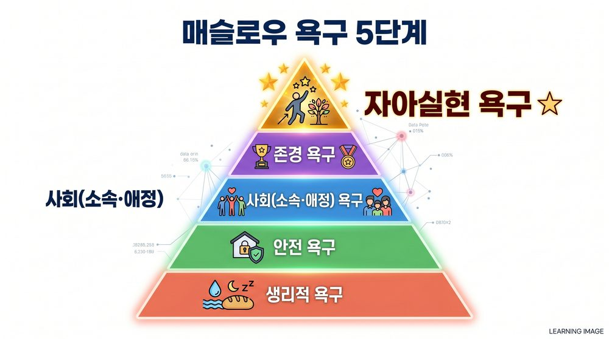
매슬로우 욕구 5단계 피라미드
생리 → 안전 → 사회(소속·애정) → 존경 → 자아실현 (최상위)
★ 최상위 = 자아실현 욕구
개념 28알더퍼 ERG이론
| 욕구 | 영어 | 매슬로우 대응 |
|---|---|---|
| 존재(E) | Existence | 생리·안전 |
| 관계(R) | Relatedness | 사회·존경 일부 |
| 성장(G) | Growth | 자아실현·존경 일부 |
★ 매슬로우와 차이: 동시에 여러 욕구 작용 가능 / 좌절-퇴행 과정 추가
개념 29허즈버그 2요인이론
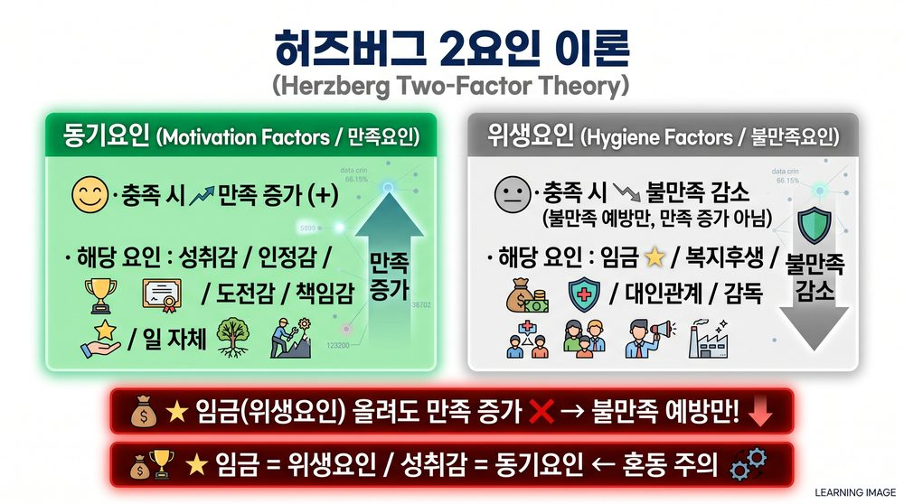
허즈버그 2요인 비교
| 요인 | 내용 | 효과 |
|---|---|---|
| 동기요인 | 성취감·인정감·도전감·책임감·성장·일 자체 | 만족 증가 |
| 위생요인 | 임금·복지후생·대인관계·감독·작업환경 | 불만족 감소 |
⚠️ 함정 주의: 임금 = 위생요인 ← 동기요인으로 착각 (단골 빈출)
개념 30아담스 공정성이론
★ 자신의 투입/산출 비율을 타인과 비교 → 불균형 인지 시 동기유발
⚠️ 함정 주의: 과정이론임 — 내용이론으로 착각 금지
개념 31MBO (목표에 의한 관리)
| 항목 | 내용 |
|---|---|
| 제창자 | 드러커(Drucker), 1954년 |
| 특징 | 구체적 목표 + 종업원 참여 + 기간 명시 + 피드백 |
⚠️ 함정 주의: 중앙집권적 목표수립 ❌ → 참여를 통한 목표수립
PART 6. 인사·교육훈련▲
개념 32교육 vs 훈련 — 반대로 외우는 함정
| 구분 | 강조점 | 기간 |
|---|---|---|
| 교육 | 개인 목표 강조 | 장기적 |
| 훈련 | 조직 목표 강조 | 단기적 |
⚠️ 함정 주의: '교육 = 조직목표 강조' → ❌ 가장 자주 틀리는 함정
개념 33OJT vs Off JT
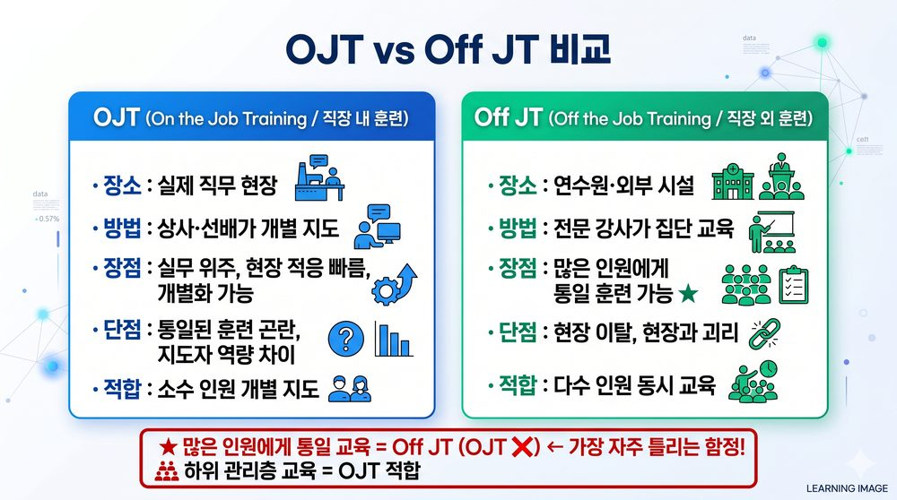
OJT vs Off JT 비교
| 구분 | 장소 | 특징 | 한계 |
|---|---|---|---|
| OJT | 직장 내 | 직속상사 지도·실제적 | 통일된 훈련 곤란 |
| Off JT | 직장 외 | 연수원·양성소 | 소규모 기업 실시 어려움 |
⚠️ 함정 주의: '많은 인원에게 통일된 훈련 = OJT' → ❌ Off JT
개념 34교수설계 단계
3단계: 분석 → 설계 및 개발 → 평가
5단계: 분석 → 설계 → 개발 → 실행 → 평가
5단계: 분석 → 설계 → 개발 → 실행 → 평가
⚠️ 함정 주의: '수행목표 명세화' = 설계단계 — 분석단계 아님
개념 35교육 유형 분류
| 유형 | 종류 |
|---|---|
| 집합교육 | 강의·시범·토론·실습 |
| 개인교육 | 카운슬링·멘토링·코칭 |
| 소집단교육(10명 이하) | 사례연구법·밀봉토의법·패널디스커션 |
⚠️ 함정 주의: 카운슬링 = 개인교육 — 집합교육에 포함시키면 오답
개념 36주요 교육기법
| 기법 | 핵심 |
|---|---|
| 브레인스토밍 | 오즈본 창안, 질보다 양 우선, 비판 금지, 7명 |
| 밀봉토의법(6-6방식) | 6명이 각자 1분씩, 합계 6분 |
| 명목집단법(NGT) | 서면으로 대안 제시, 토론·비평 금지 |
| 시그니피컨트법 | 유사성 비교로 아이디어 발견 |
| 바이오닉스법 | 자연계·동식물 관찰로 아이디어 발견 |
⚠️ 함정 주의: '브레인스토밍 = 질 우선' → ❌ 양 우선
개념 37인사평가 오류
| 오류 | 내용 |
|---|---|
| 후광효과(Halo) | 한 특성의 인상이 전체 평가에 영향 |
| 관대화 경향 | 평가결과가 한쪽으로 치우치는 경향 |
| 상동적 오류 | 사회집단(지역·학교 등) 기준 평가 |
| 투사 | 자기 특성을 타인에게 전가 |
⚠️ 함정 주의: '집단 한쪽 치우침 = 후광효과' → ❌ 관대화 경향
개념 38직무 관련 서류
| 서류 | 초점 |
|---|---|
| 직무기술서 | 직무 내용 자체 |
| 직무명세서 | 직무수행에 필요한 인적요건 (교육·능력·자격) |
PART 7. 운전특성·생리▲
개념 39시야
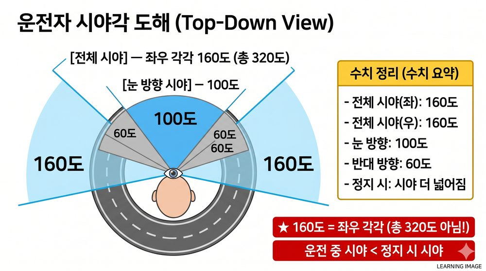
시야각 도해
| 상황 | 시야 |
|---|---|
| 정지 시 | 좌우 각각 160도 |
| 속도↑ | 시야 좁아짐 + 전방주시점 멀어짐 |
| 고령자(50세↑) | 수평 시야각 170° → 140° 감소 |
⚠️ 함정 주의: '속도↑ → 시야 넓어짐' → ❌ 좁아짐
개념 40동체시력
★ 정지시력 대비 30% 낮음 — 운전 중 움직이는 물체 식별 능력
개념 41순응 — 빛 환경 변화
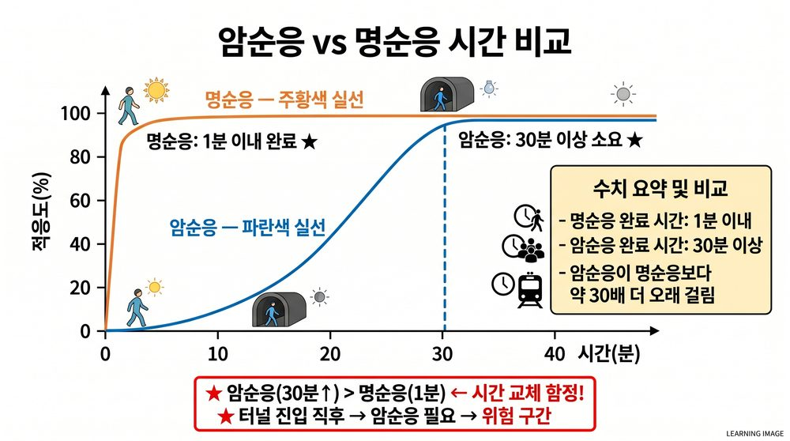
암순응 vs 명순응 시간 비교
| 구분 | 방향 | 시간 |
|---|---|---|
| 암순응 | 밝음 → 어둠 | 완전순응 30분 이상 |
| 명순응 | 어둠 → 밝음 | 수초~1분 (빠름) |
⚠️ 함정 주의: 암순응이 훨씬 느리다 — 터널 진입 후 위험한 이유
개념 42정지거리 공식
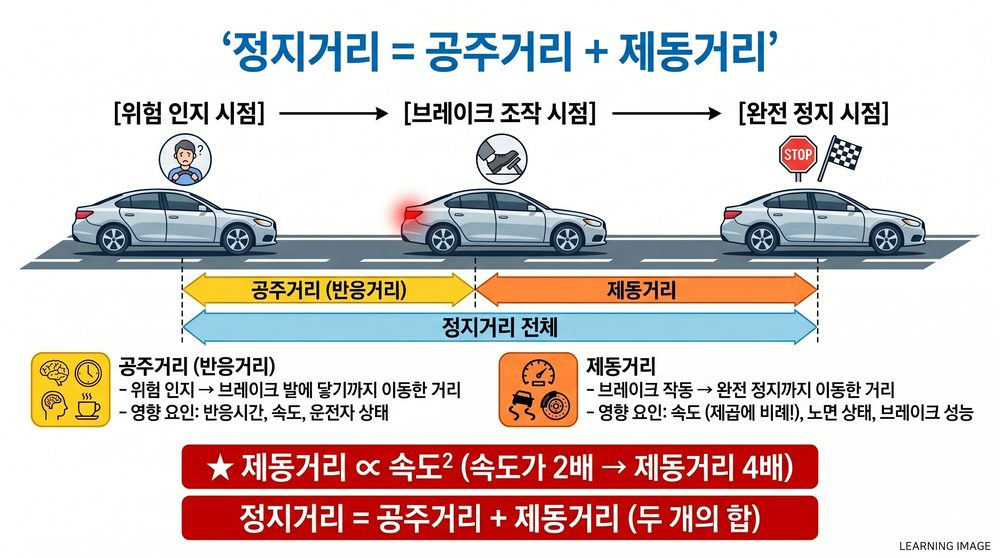
정지거리 도해
정지거리 = 공주거리(위험인지→브레이크 작동 전) + 제동거리(브레이크→완전정지)
⚠️ 함정 주의: 스키드마크 = 제동 시 타이어 잠김 → 속도 추정 가능 (차량 추진력 파악 ❌)
개념 43마찰계수 (μ)
| 노면 | μ 값 |
|---|---|
| 건조 노면 | 0.8 ~ 0.9 |
| 젖은 노면 | 0.5 ~ 0.7 |
| 얼어 있는 노면 | 0.2 이하 |
개념 44정상운전 여유시간
| 상황 | 차간거리 기준 시간 |
|---|---|
| 정상운전 | 2초 |
| 서행 | 4초 이상 |
| 과속 | 1초 |
개념 45운전자 특성
| 유형 | 특성 |
|---|---|
| 고령운전자 | 순발력·시력·청력·민첩성 저하 (순발력 확보 ❌) |
| 음주운전자 | 과활동성·충동성·공격성·비순응성 (신체기능 원활 ❌) |
| 사고다발자 | 충동적·자극민감·주관적 판단·자기통제력 박약 (협조적 ❌) |
PART 8. 사고조사·통계▲
개념 46교통사고 조사 목적
★ 사고 예방 — '책임자 처벌'이 목적 아님
개념 47사고 조사 분류
★ 1차조사·재조사·공식조사 3종류
⚠️ 함정 주의: '임시조사'는 없음
개념 48사고요인 배열형 3가지
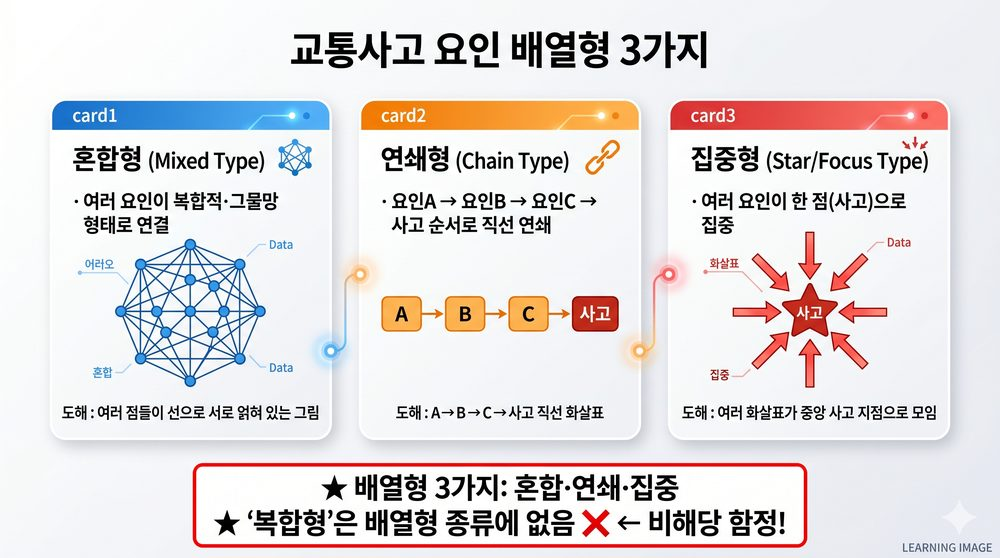
사고요인 배열형 3종
혼합형 · 연쇄형 · 집중형
⚠️ 함정 주의: '복합형'은 배열형에 없다 — 단골 함정
개념 49분석 방법 구분
| 분석 방법 | 유형 |
|---|---|
| 사례적 분석 | 개별적 사고분석·교통환경분석·운전자적성분석·차량안전도분석 |
| 통계적 분석 | 노선별·차종별·조직별 분석 |
⚠️ 함정 주의: '노선별 분석 = 사례적 분석' → ❌ 통계적 분석
개념 50노선 평가 구간 단위
★ 100m · 500m · 1,000m
⚠️ 함정 주의: 1,500m는 없음
PART 9. 대인관계·심리▲
개념 51인지부조화이론
★ 페스팅거(Festinger), 1957년 — 태도·신념·행동 간 일관성 유지하려는 심리
개념 52준거집단
★ 자신의 잠재력·운명·위치 파악의 기준이 되는 집단
개념 53집단간 갈등 해소 방법
| 방법 | 내용 |
|---|---|
| 문제해결법(대면전략) | 얼굴 맞대고 공개토론 |
| 협상 | 상호 양보를 통한 합의 |
| 상위목표 도입 | 공동목표 설정 |
개념 54색채·시각 기초
| 항목 | 내용 |
|---|---|
| 명도 높은 색 | 크게 보임 · 진출 · 명시도 높음 |
| 명도 낮은 색 | 작게 보임 · 후퇴 |
| 적색 | 긴장·불안·위협감 (금지·정지·위험·긴급 상징) |
PART 10. 기타 핵심 개념▲
개념 55평균임금 계산 기준
★ 3개월 총임금 ÷ 총일수
개념 56전략계획 vs 전술계획
| 구분 | 내용 |
|---|---|
| 전략계획 | 이념(mind) 포함 |
| 전술계획 | 방침·절차·규칙·예산·프로그램·일정계획 |
개념 57합리적 의사결정과정
문제인식 → 정보수집·분석 → 대안탐색·평가 → 대안선택 → 실행 → 결과평가
개념 58교통안전관리 목표 비해당
⚠️ 함정 주의: 교통수송량 증가 ❌ / 주택보급 확대 ❌ / 교통수단 및 운영체계 개선 권고 ❌